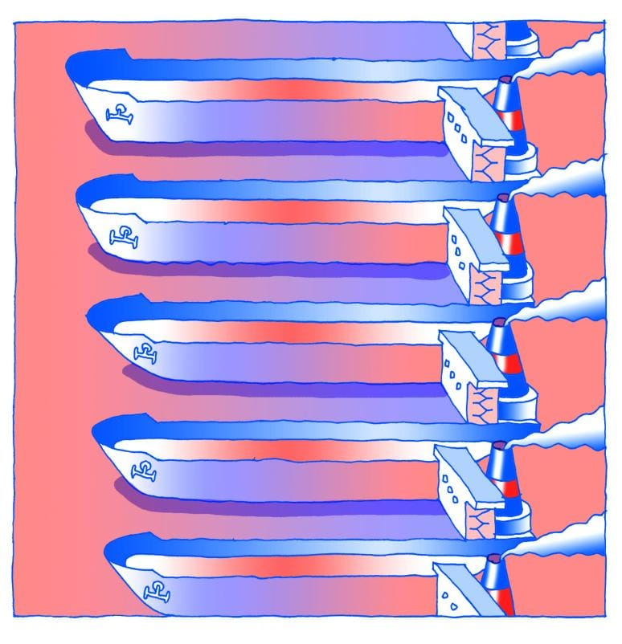
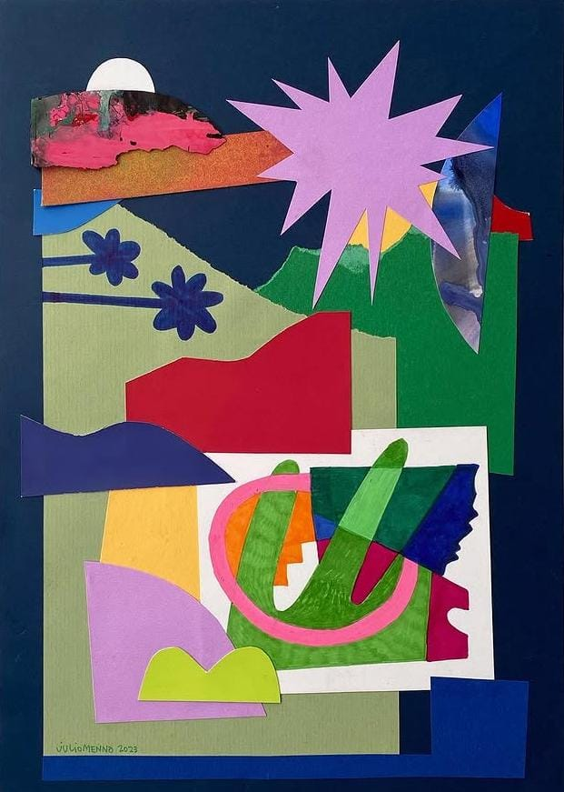
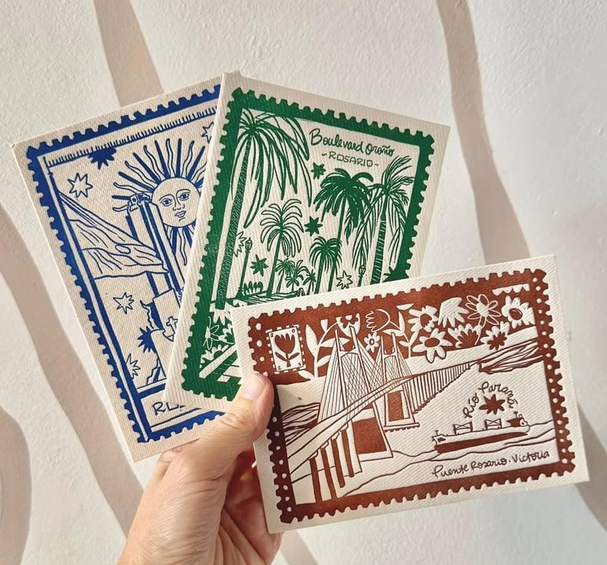
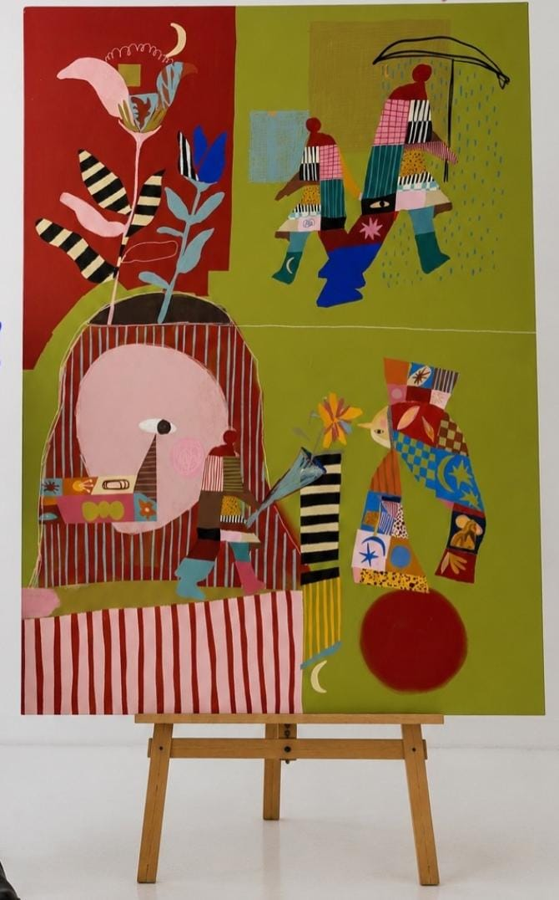
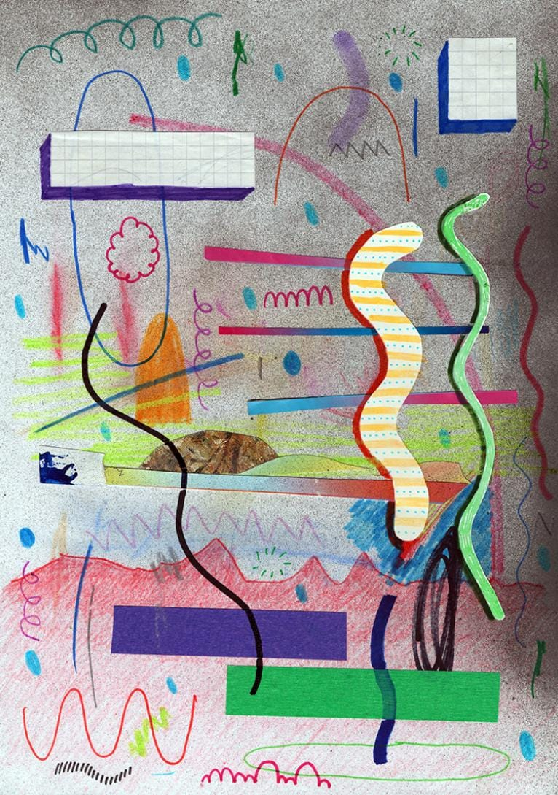
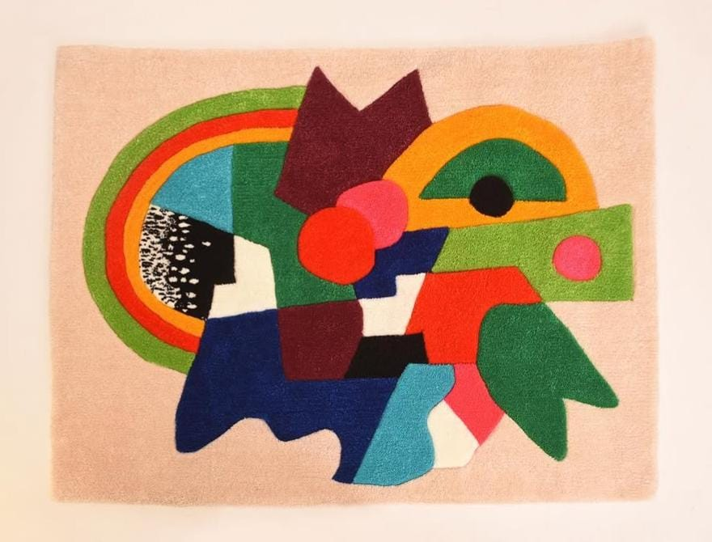
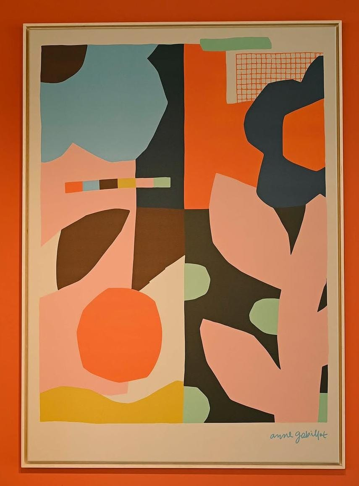
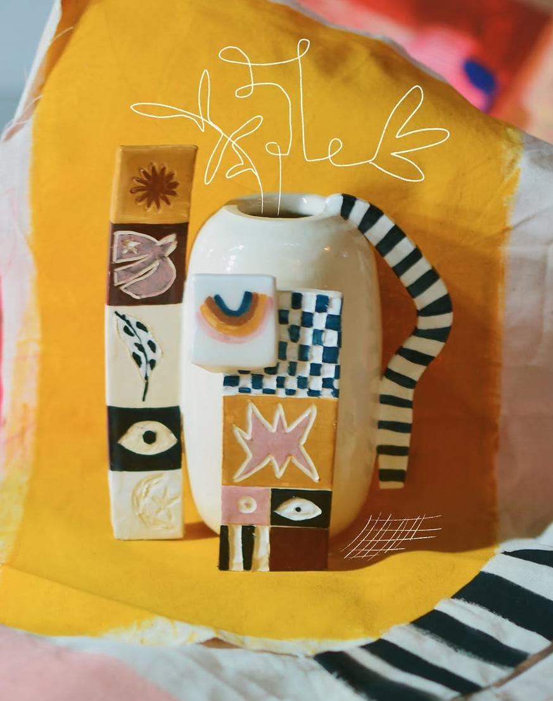

Detrás de los muros
Detrás de los muros presenta a cuatro muralistas dispuestos a salir de su comodidad y, encaminar nuevos rumbos través de distintas disciplinas. La colorimetría, tamaños más accesibles y la disposición espacial se vuelven factores importantes en este encuentro
Al desplazarse brevemente de la escala monumental de la calle, al espacio contenido de la galería, estos cuatro muralistas, Julio Menna, Feli Punch, Anne Gabillot y Vico Destefano nos invitan a revisar la dimensión más íntima y experimental de sus producciones.
Acostumbrados al dinamismo del espacio público, esta exposición propone una pausa estratégica: un ejercicio donde cada artista sale de su zona de confort para volcar su imaginario en formatos transportables y materiales nobles. Lejos de intimidarse ante el desafío, las obras individuales de cada uno encuentran un territorio común articulado por el uso vibrante del color, la síntesis geométrica y la exploración del plano como un lienzo de infinitas capas.
En esta escala más accesible, las fronteras entre el diseño, la ilustración y las artes plásticas se disuelven para dar paso a objetos de profunda identidad personal. Julio Menna traslada sus composiciones pictóricas a la calidez de la lana con una pieza elaborada en hand tufting en colaboración con el estudio de diseño @yoku_studio y luego suma a la propuesta la inmediatez del collage en papel, donde el recorte y la superposición abren nuevas formas geométricas y abstractas.
En diálogo con esta búsqueda formal, Feli Punch (Pablo Boffelli) traslada su habitual trazo narrativo e irónico hacia el dibujo abstracto sobre papel en un collage de gran impacto, acompañado de una llamativa ilustración, sintetizando paisajes gráficos donde la línea, la trama y el ritmo visual despliegan un orden casi arquitectónico.
Por su parte, Anne Gabellot ejercita la precisión de la forma en cuadros de estudio donde los bloques de color saturado dialogan sobre lienzo, en conjuncion de una serie de tres impresiones sobre pulpa de algodón en letterpress, convirtiendo la estampa en un objeto de deseo coleccionable.
Finalmente, Vico Destefano condensa su mundo cargado de color y protagonismo en un lienzo de mediano formato cargados de narrativa simétrica y simbolismo, al mismo tiempo lo combina con una propuesta material tridimensional como lo es la cerámica pintada. En conjunto, la muestra demuestra cómo cuatro referentes del arte urbano Rosarino logran resignificar su lenguaje, ofreciendo una colección de obras pensadas para convivir en el espacio cotidiano y ser habitadas desde la cercanía.
Propuesta curatorial a cargo de Juliana Pérez
Colección de obras








Listado de obras
| Título | Artista | Año | Técnica | Precio de consulta |
|---|---|---|---|---|
| Otro Río | Pablo Boffelli | 2018 | Ilustración digital | $ 520.000 |
| S/t | Julio Menna | 2023 | Collage sobre papel | $ 180.000 |
| Postales | Anne Gabillot | 2025 | Letterpress | $ 95.000 |
| S/t | Vico Destefano | 2026 | Acrílico sobre lienzo | Consultar |
| Serie Mudanzas | Pablo Boffelli | 2015 | Collage sobre papel | $ 140.000 |
| TEJER | Julio Menna x Youku Studio | 2022 | Hand Tufting | $ 110.000 |
| Serie Archivos de Jardín | Anne Gabillot | 2025 | Arte Impreso | $ 110.000 |
| S/t | Vico Destefano | 2026 | Cerámica | $ 110.000 |
Los precios se informan a modo de consulta. Por adquisiciones, escribinos.